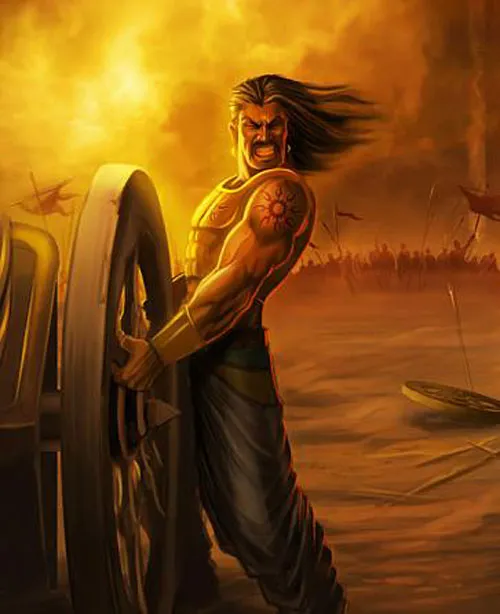

KARNAN
History of Karnan
Karna (Sanskrit: कर्ण, IAST: Karṇa), also known as Vasusena, Anga-raja, and Radheya,[2] is one of the main protagonists of the Hindu epic Mahābhārata.[3][4] He is the son of the sun god Surya and princess Kunti (mother of the Pandavas), and thus a demigod of royal birth. Kunti was granted the boon to bear a child with desired divine qualities from the gods and without much knowledge, Kunti invoked the sun god to confirm it if it was true indeed. Karna was secretly born to an unmarried Kunti in her teenage years, and fearing outrage and backlash from society over her premarital pregnancy, Kunti had to abandon the newly born Karna adrift in a basket on the Ganges.[3][5] The basket is discovered, and Karna is adopted and raised by foster Sūta parents named Radha and Adhiratha Nandana[2] of the charioteer and poet profession working for king Dhritarashtra

Birth and Early Life
According to the legend, there was a king of the Yadava dynasty named Shurasena who had a beautiful young daughter named Pritha (later Kunti). A rishi (Vedic scholar and seer) named Durvasa visited the king for a lengthy stay and was housed as his palace guest. Shurasena asked Pritha to ensure that Durvasa's stay was comfortable. On leaving, having been delighted with his stay and her diligent services, Durvasa thanked her and gave her the Siddha mantra, telling her that if she ever wants, she can invoke any deity to give her a child.[39][note 3]
Teenage Pritha became curious, wondered if the mantra would really work and, as the sun rose one morning, she initiated the mantra through which she could invoke any divine God being to provide her a son. She called the sun god Surya. He came with a golden glow, dressed up in jewellery and breastplate, and provided her with her first son.[40][note 4] Pritha felt confused and ashamed, worried what everyone will think and how she will embarrass her family. At that time, according to Vedic civilization, if a girl gives birth to a child before married are less likely to marry. So, she put the newborn baby in a padded basket, and set it adrift in the small river Ashvanadi by the palace.